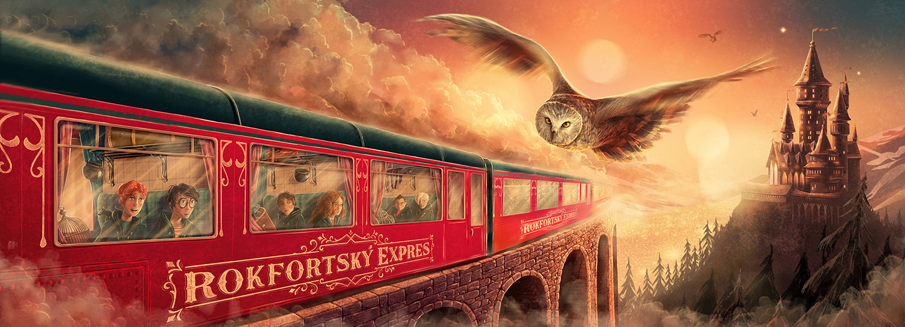

Each year a new set of students enter Kings Crossing and make their way to Platform 9 ¾ where they board the Hogwarts Express and embark on their journey to Hogwarts School of Witchcraft and Wizardry. Upon arriving at this mystical school the very first thing to happen is to find out whether you’re a Gryffindor, Slytherin, Ravenclaw or Hufflepuff. But what does your Hogwarts house actually mean and what does it say about you?

The Sorting Hat
The Sorting Hat was a sentient magical hat at Hogwarts that was used to determine which of the four school Houses was the best fit for each new student. These four Houses were Gryffindor, the house of bravery, Hufflepuff, the house of hard work, Ravenclaw, the house of intelligence, and Slytherin, the house of ambition. It was enchanted by the four founding members of Hogwarts and their knowledge and intellegence was bestowed upon it when it was enchanted. It is one of the cleverest enchanted objects most witches and wizards will ever meet.